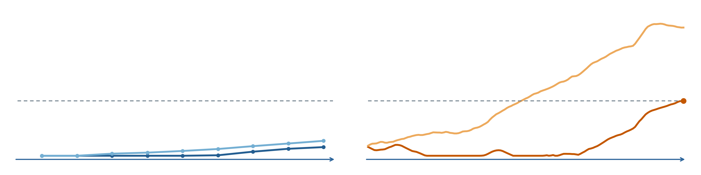

同じ隣接2区画、同じ150 ms。横軸はEVS候補時刻を0とした時間、縦軸は各センサの積算スコアをそのセンサの固定しきい値で割った値。点線は1。
RGBの小さな点は元のフレームごとの値。EVS右端の丸は検出候補時刻。RGBには検出を示す丸を追加していない。
区画ID [177, 178]。表示サンプル数 RGB=9 / EVS=151。全評価区間の候補数 RGB=0 / EVS=1。
EVSで選ばれた区画の履歴をRGBでも表示した方法説明用の図。RGB自身が選んだ候補区画や、検出性能の独立評価を表すものではない。